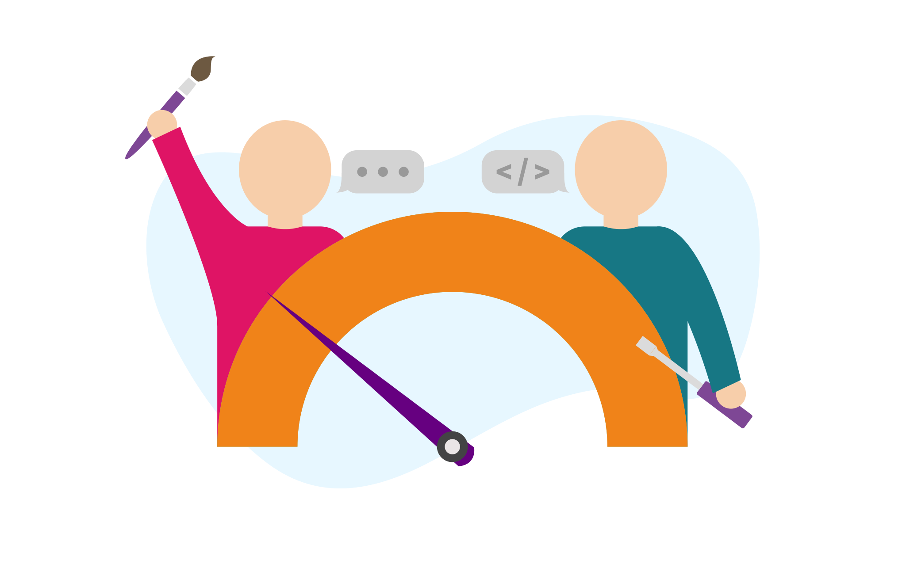

TAD to narzędzie dla autorów treści wspomagające zapewnianie dostępności. Wyróżnia wizualnie typowe problemy i podpowiada, jak je naprawić.
Funkcje
TAD działa jako prosty program testujący pojedyncze strony. Został zaprojektowany tak, aby można go było łatwo zintegrować z dowolnym systemem zarządzania treścią (CMS), ale może również działać jako skryptozakładka. TAD nie jest narzędziem do wszechstronnej analizy kodu.
- Ponad 30 warunków testowych.
- Łatwe, intuicyjne podpowiedzi wyjaśniające problemy.
- Darmowe i otwarte źródło.
- Bez skomplikowanego API lub integracji.
- Proste zestawy reguł.
- Łatwy do dostosowania: dodaj własne zestawy reguł.
Zaprojektowany dla autorów treści
Stany
TAD sygnalizuje trzy stany.
Błędy
Wykrywa i sygnalizuje typowe błędy użyteczności i dostępności na poziomie A i AA WCAG 2.1.
Uwagi
Ostrzega przed potencjalnymi problemami i monituje o ręczne przejrzenie elementu.
Dobrze!
Nie wykryto żadnych problemów z dostępnością lub użytecznością. Kciuk w górę! Masz prawo do satysfakcji!
Pokaż konspekt
Przycisk Pokaż konspekt wyświetla strukturę nagłówków strony, podobną do spisu treści książki. Konspekt strony daje wizualny obraz tego, jak sekcje strony są ze sobą połączone. Nagłówki powinny zawsze mieć strukturę, która przekazuje hierarchię treści.
Zestaw reguł testowych
TAD zgłasza poniższe błędy i ostrzeżenia.
Błędy
- 14 warunków tekstów alternatywnych.
- Nieopisowe łącza (np. kliknij tutaj, czytaj więcej).
- Brak komórek nagłówkowych w tabeli <th>.
- Tabele z pustymi komórkami nagłówkowymi.
- Tabele używajace nagłówków semantycznych (H1, H2) zamiast nagłówków tabel <th>.
- Pominięte poziomy nagłówków.
- Zbyt długie nagłówki.
- Uwaga: to nie jest błąd WCAG 2.1.
- Struktura nagłówków nie rozpoczyna się od H1.
- Blok cytatu użyty jako nagłówek.
- Kontrast tekstu.
- Brakujące etykiety pól w formularzu.
- Niezadeklarowany język strony.
- Zduplikowana wartość atrybutu id.
Ostrzeżenia
Ostrzeżenia mogą monitować o ręczne przejrzenie elementu, zawierać sugestie dotyczące poprawy użyteczności/dostępności lub ostrzegać o problemach z dostępnością, których nie można wykryć programowo.
- Obrazy używane jako hiperłącza: przejrzyj tekst alternatywny opisujący lokalizację łącza.
- Wykryte WSZYSTKIE WIELKIE LITERY/wielkie litery
- Kontrast, którego nie można określić programowo, na przykład tekst na tle obrazu.
- Ostrzeżenie w przypadku widżetów wideo, aby sprawdzić, czy istnieją napisy rozszerzone.
- Ostrzeżenie w przypadku widżetów audio, aby sprawdzić, czy istnieją transkrypcje.
- Ostrzeżenie o wszystkich łączach do PDF.
- Ostrzeżenie przed nadmiernym korzystaniem z otwierania łącza na nowych kartach lub w nowych oknach.
Demo
Kliknij przycisk, aby rozpocząć. Przejdź do różnych stron, aby wyświetlić wszystkie trzy stany. Po włączeniu TAD pozostanie włączony nawet podczas przechodzenia do różnych stron. Po prostu kliknij ten sam przycisk, aby wyłączyć TAD.
Instalacja
Skryptozakładka Eksperymentalnie
TAD może działać jako skryptozakładka w dowolnej przeglądarce internetowej. Po prostu przeciągnij na pasek zakładek w Twojej przeglądarce jeden z poniższcyh przycisków. Następnie przejdź na stronę, którą chcesz zbadać i uaktywnij.
Jak zainstalować TAD na swojej stronie, przeczytaj poniżej.
Dla programistów i webmasterów
- Pobierz kod źródłowy TAD z Github
- Pobierz oryginalny kod źródłowy SAlly z Github
- Zobacz demo wszystkich reguł testowych w akcji.
Instalacja
TAD opiera się na jQuery i działa najlepiej, używając biblioteki podpowiedzi, która zawiera system pozycjonowania zapewniający, że podpowiedzi nigdy nie są ukrywane przez konfliktowe style CSS, takie jak overflow:hidden;. Ta wersja TAD została zbudowana przy użyciu Tippy.js, wysoce konfigurowalnej biblioteki podpowiedzi.
Aby zainstalować na swojej stronie, wstaw TAD zaraz po znaczniku skryptu jQuery i tuż przed znacznikiem zamykajacym